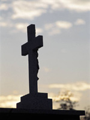
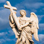
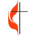
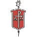
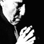

|
The Constitution The organization of each unit in the church is carefully spelled out in the Book of Discipline. All members are at least acquainted with the local church. It includes those who have professed their belief in Christ, have been baptized, and have taken the vows of membership. The local church is the context for hearing the Word of God and for receiving the Sacraments. It reaches out in the name of Christ to bring persons into its fellowship, to nurture the members in their faith, and to witness to and serve the community, both local and global. Groups of local churches work together as a district and are supervised by a clergy superintendent. These districts are part of an annual conference, the basic unit of the denomination. Central conferences are those regional units outside the United States. Conferences in the United States are grouped into five geographic jurisdictions. Checks and balances are built into all aspects of church life. The organization of the denomination resembles that of the U.S. government. The General Conference is the top legislative body; the nine-member Judicial Council is the "supreme court"; and the Council of Bishops is similar to the executive branch. Churchwide agencies are primarily accountable to the General Conference. Their staff are governed by boards of directors who are lay and clergy persons. Preamble | General | Organization | Episcopal Supervision | The Judiciary | Amendments Preamble | Español General | Español Organization | Español Episcopal Supervision | Español The Judiciary| Español Amendments | Español
From The Book of Discipline of The United Methodist Church - 2004. Copyright 2004 by The United Methodist Publishing House. Used by permission. |
 UMC.org
is the official online ministry of The United Methodist Church. UMC.org
is the official online ministry of The United Methodist Church.© 2023 United Methodist Communications |